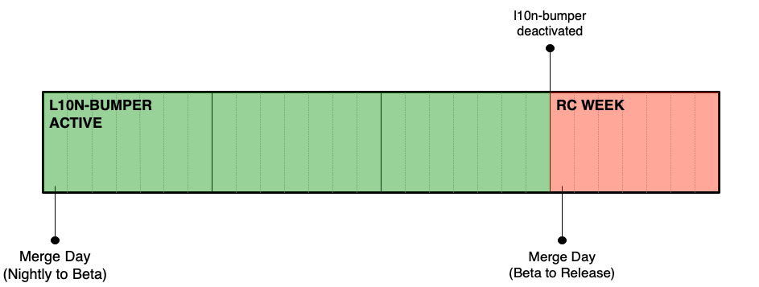
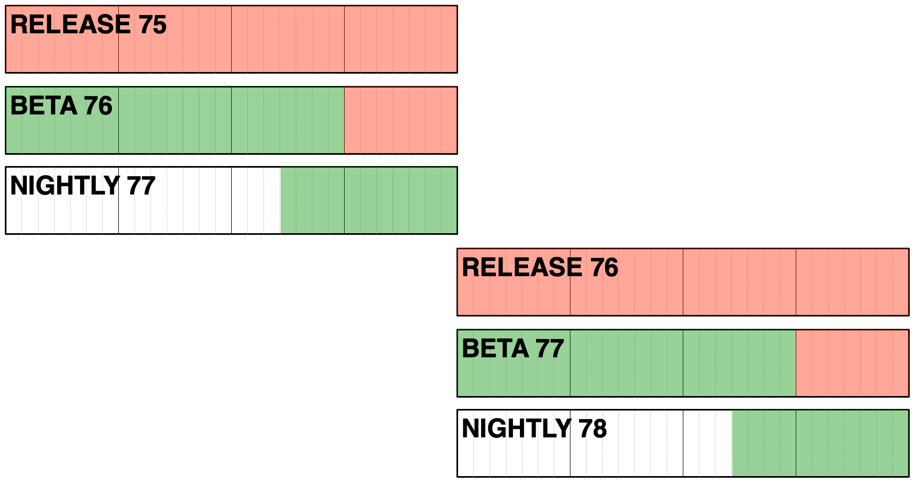

Build system details for Firefox desktop
Overview
Thanks to using a single source for localization, we ship all versions of Firefox from a single localization repository.
A job, called l10n-bumper, runs on Taskcluster every hour, and stores information on which changeset (defined by the revision SHA of firefox-l10n) to use for each build in a file called l10n-changesets.json:
- Nightly (
mozilla-central) changeset: l10n-changesets.json. This always uses the latest revision ofmain. - Beta (
mozilla-beta) changeset: l10n-changesets.json. This also uses the the latest revision ofmain, but it’s only updated twice a week. - Before Release Candidate week, the
mozilla-betatree is closed. Thel10n-bumperwill restart at the beginning of the next cycle, when themozilla-betatree is reopened. - When the Beta code is merged to Release, l10n-changesets.json moves together with the rest of the code to
mozilla-release. That means that Release builds will use the same changesets as the last beta with the same version number, and any further change requires code uplifts.
Timeline and deadlines
This is how Beta looks like in a 4 weeks release cycle, with relevant milestones.

On Monday, 8 days before the release, the l10n-bumper will stop updating l10n-changesets.json on mozilla-beta.
Once the code merges from Beta to Release, any changeset update would require a manual uplift to mozilla-release and a new Release Candidate (RC) build.

Updating release
When the code moves from mozilla-beta to mozilla-release, l10n-changesets.json is frozen, as l10n-bumper is not configured to run against the release branch.
In case of severe issues affecting one or more locales, it’s still possible to manually update the shipping changesets. A patch needs to be provided for l10n-changesets.json in mozilla-release branch and approved for uplift by Release Drivers (see for example this bug and associated patch). Note that a dot release is needed in order to ship the updated version to users. This script can be used to validate the updated JSON.
The same process applies to ESR versions, as long as the associated esr repository is included among the supported versions in firefox-l10n-source.